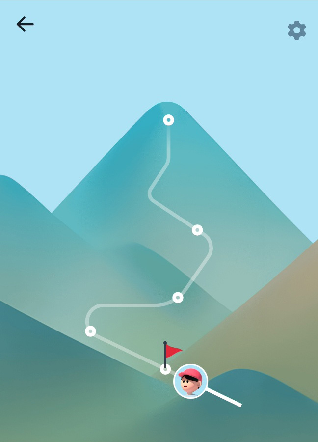

<!DOCTYPE html>
<html lang="ko">

<head>
	<meta charset="UTF-8">
	<meta name="viewport" content="width=device-width, initial-scale=1.0, maximum-scale=1.0, user-scalable=0">
	<title>테스트 svg</title>
	<link rel="stylesheet" href="./css/swiper-bundle.min.css">
	<link rel="stylesheet" href="./css/reset.css">
	<link rel="stylesheet" href="./css/animation.css">
	<link rel="stylesheet" href="./css/common.css">
	<script src="./js/swiper-bundle.min.js"></script>
	<script src="./js/cdn.jsdelivr.net_npm_chart.js"></script>

	<script src="./js/masonry.pkgd.min.js"></script>
	<script src="https://unpkg.com/imagesloaded@5/imagesloaded.pkgd.min.js"></script>
	<script src="https://unpkg.com/infinite-scroll@3/dist/infinite-scroll.pkgd.js"></script>

	<script src="./js/gsap.min.js"></script>
	<script src="./js/MotionPathPlugin.min.js"></script>
</head>

<body style="height: 4000px">

	<div id="wrap" class="test_svg_wrap">

		<!-- <div class="svg_path_wrap">
			

			<svg width="100%" height="100%" viewBox="-20 0 557 190" id="svg">
				<path
					id="path"
					d="M9,100c0,0,18.53-41.58,49.91-65.11c30-22.5,65.81-24.88,77.39-24.88c33.87,0,57.55,11.71,77.05,28.47c23.09,19.85,40.33,46.79,61.71,69.77c24.09,25.89,53.44,46.75,102.37,46.75c22.23,0,40.62-2.83,55.84-7.43c27.97-8.45,44.21-22.88,54.78-36.7c14.35-18.75,16.43-36.37,16.43-36.37"
				/>
				<g id="rect">
					<rect width="85" height="30" fill="dodgerblue" />
					<text x="10" y="19" font-size="14">SVG &lt;rect&gt;</text>
				</g>
			</svg>

			<script>
				gsap.registerPlugin(MotionPathPlugin);

				gsap.to("#rect", {
					duration: 5, 
					repeat: 12,
					repeatDelay: 3,
					yoyo: true,
					ease: "power1.inOut",
					motionPath:{
						path: "#path",
						align: "#path",
						autoRotate: true,
						alignOrigin: [0.5, 0.5]
					}
				});
			</script>
		</div> -->


		<!-- <div id="motion-demo"></div>
		<style>
			#motion-demo {
				offset-path: path("M20,20 C20,100 200,0 200,100");
				width: 40px;
				height: 40px;
				background: cyan;
			}

			@keyframes move {
				0% {
					offset-distance: 0%;
				}
				100% {
					offset-distance: 100%;
				}
			}
		</style> -->


		<svg viewBox="0 0 10 10" class="svg-1">
			<path d="M2,2 L8,8" />
		</svg>
		<svg viewBox="0 0 10 10" class="svg-1">
			<path d="M8,2 L2,8" />
		</svg>


		<svg viewBox="0 0 10 10" class="svg-2">
			<path d="M2,8 L5,2 L8,8" />
		</svg>
		<svg viewBox="0 0 10 10" class="svg-2">
			<path d="M2,2 L5,8 L8,2" />
		</svg>

		<svg viewBox="0 0 10 10" class="svg-3">
			<path d="M2,2 Q8,2 8,8" />
		</svg>
		<svg viewBox="0 0 10 10" class="svg-3">
			<path d="M2,2 Q2,8 8,8" />
		</svg>

		<svg viewBox="0 0 10 10" class="svg-4">
			<path d="M2,5 C2,8 8,8 8,5" />
		</svg>
		<svg viewBox="0 0 10 10" class="svg-4">
			<path d="M2,5 C2,2 8,2 8,5" />
		</svg>
		
		<svg viewBox="0 0 10 10" class="svg-5">
			<path d="M2,2 L8,2 L2,5 L8,5 L2,8 L8,8" />
		</svg>
		<svg viewBox="0 0 10 10" class="svg-5">
			<path d="M3,3 L8,3 L2,5 L8,5 L3,7 L7,7" />
		</svg>
		
		<svg viewBox="0 0 10 10" class="svg-6">
			<!--     Mx,y A x,y deg-->
			<path d="M2,5 A 5 25 0 0 1 8 8" />
		</svg>
		<svg viewBox="0 0 10 10" class="svg-6">
			<path d="M2,5 A 5 25 -15 0 1 8 8" />
		</svg>

		<svg viewBox="0 0 10 10" class="svg-7">
			<path d="M2,5 S2,-2 4,5 S7,8 8,4" />
		</svg>
		<svg viewBox="0 0 10 10" class="svg-7">
			<path d="M2,5 S2,14 4,5 S7,8 8,4" />
		</svg>
		
		<svg viewBox="0 0 10 10" class="svg-8">
			<path d="M5,2 Q 2,5 5,8" />
		</svg>
		<svg viewBox="0 0 10 10" class="svg-8">
			<path d="M5,2 Q 8,5 5,8" />
		</svg>
		
		<svg viewBox="0 0 10 10" class="svg-9">
			<path d="M2,2 Q5,2 5,5 T8,8" />
		</svg>
		<svg viewBox="0 0 10 10" class="svg-9">
			<path d="M2,2 Q8,2 5,5 T8,8" />
		</svg>


	</div>

	<svg viewBox="-30 -5 60 60" class="svg-10" style="width: 300px;">
		<path d="M 0 0 L 0 7 C 0 10 -1 11 -5 15 C -6 16 -6 17 -5 18 C -3 20 -1 20 2 22 C 6 25 4 28 -1 32 C -7 34 -6 32 -10 33 C -15 33 -15 39 -12 41 L -1 44 L 11 47" />
	</svg>


	<svg viewBox="0 0 300 300" class="svg-10" style="width: 300px;">
		<path d="m 8 223 C 8 223 151 226 193 42 c 2 -11 -1 -20 1 -33 h 16 c 0 0 -3 17 1 30 c 21 68 -4 242 -204 196 L 8 223 z M 8 230 c 0 0 188 40 196 -160" />
	</svg>


	<div>
		<div id="output" class="output large">
			<section id="default-example" class="default-example">
				<div id="example-element" class="transition-all" style="offset-distance: 0%;"></div>
			</section>
		</div>


		<style>
			.output {
					background-color: #fff;
					height: 300px;
					overflow: hidden;
					padding: 1em;
					position: relative;
					border: 1px solid #000;
				}
				.output section {
					align-items: center;
					display: flex;
					justify-content: center;
					height: 100%;
					text-align: center;
			}
			#example-element {
					width: 24px;
					height: 24px;
					background: #2bc4a2;
					offset-path: path('M 0 0 L 0 7 C 0 10 -1 11 -5 15 C -6 16 -6 17 -5 18 C -3 20 -1 20 2 22 C 6 25 4 28 -1 32 C -7 34 -6 32 -10 33 C -15 33 -15 39 -12 41 L -1 44 L 11 47');
					/* offset-path: path('M2,5 S2,14 4,5 S7,8 8,4'); */
					clip-path: polygon(0% 0%,70% 0%,100% 50%,70% 100%,0% 100%,30% 50%)
			}

			#default-example {
					background-position: calc(50% - 12px) calc(50% + 14px);
					background-repeat: no-repeat;
					background-image: url('data:image/svg+xml;utf8,<svg xmlns="http://www.w3.org/2000/svg" viewBox="-75 -45 150 140" width="150" height="140"><path d="M-70,-40 C-70,70 70,70 70,-40" fill="none" stroke="lightgrey" stroke-width="2" stroke-dasharray="4.5"/></svg>')
			}
			.transition-all {
					transition: all .3s ease-in;
			}
		</style>
	</div>


	<script src="./js/common.js"></script>

</body>
</html>